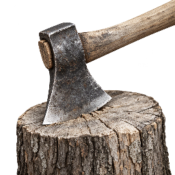
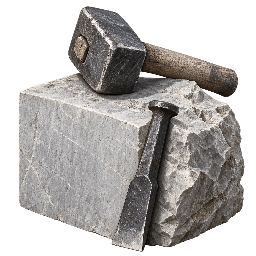
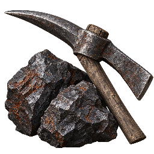

Cinematic · Produktionssymbole, Entwurf 2
Gedeckte Farben und realistische Werkzeugformen. Entscheidend ist die obere Reihe: Alle Symbole in den Karten sind 40 × 40 Pixel groß. Darunter stehen vergrößerte Ansichten zur Beurteilung der Materialien.
Aktueller Entwurf: nähere Werkzeugdetails und sieben Gebäude mit einheitlicher Lagerperspektive →
Holzfäller

HolzfällerStufe 1
+3.5 Holz/s
Holz · Stein · Eisen
Ausbauen →2
Axt und graubraunes Holz96 px · zur Materialbeurteilung
Steinbruch

SteinbruchStufe 1
+2.0 Stein/s
Holz · Stein · Eisen
Ausbauen →2
Kalkstein, Hammer und Meißel96 px · zur Materialbeurteilung
Eisenmine

EisenmineStufe 1
+1.0 Eisen/s
Holz · Stein · Eisen
Ausbauen →2
Dunkles Erz und Spitzhacke96 px · zur Materialbeurteilung
Holzfäller · vorher und jetzt, jeweils 40 px
 Erster Entwurf
Erster Entwurf
Warm und stark überzeichnetEntwurf 2
Graubraunes Holz, kompaktere AxtformDrei Stilproben zur gemeinsamen Beurteilung. Noch nicht in das Spiel eingebunden.
Prompts und Materialvorgaben · Erste Stilprobe · Zum Spiel